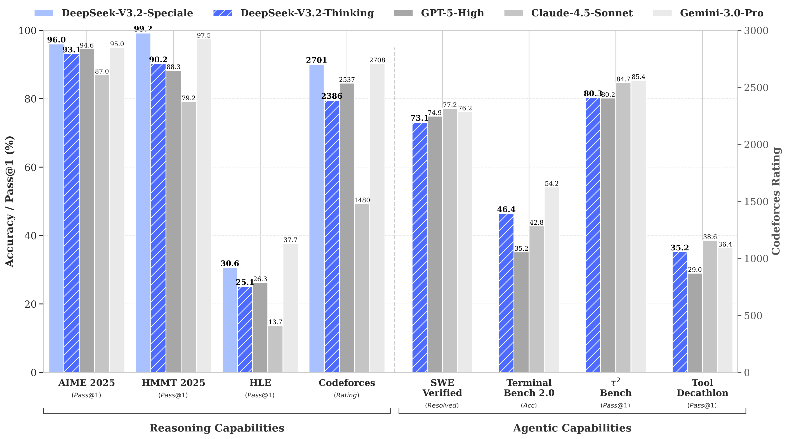
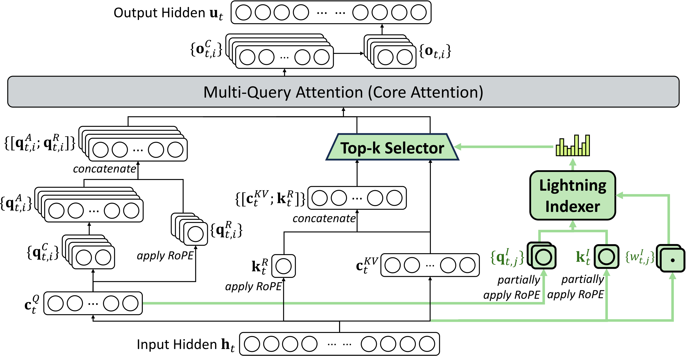
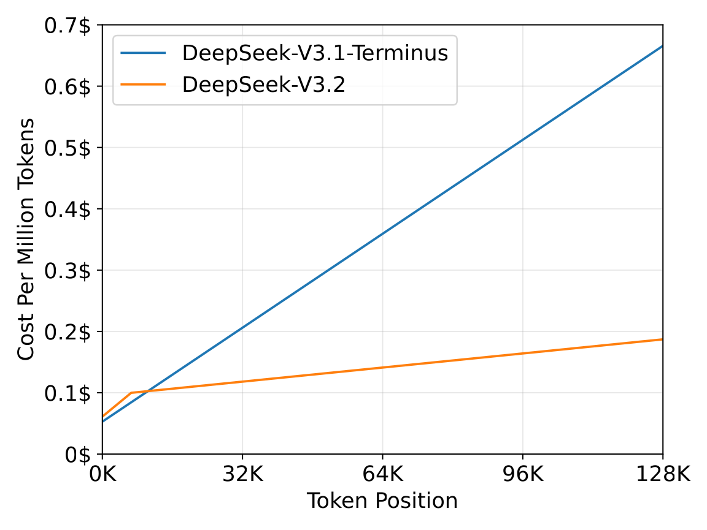
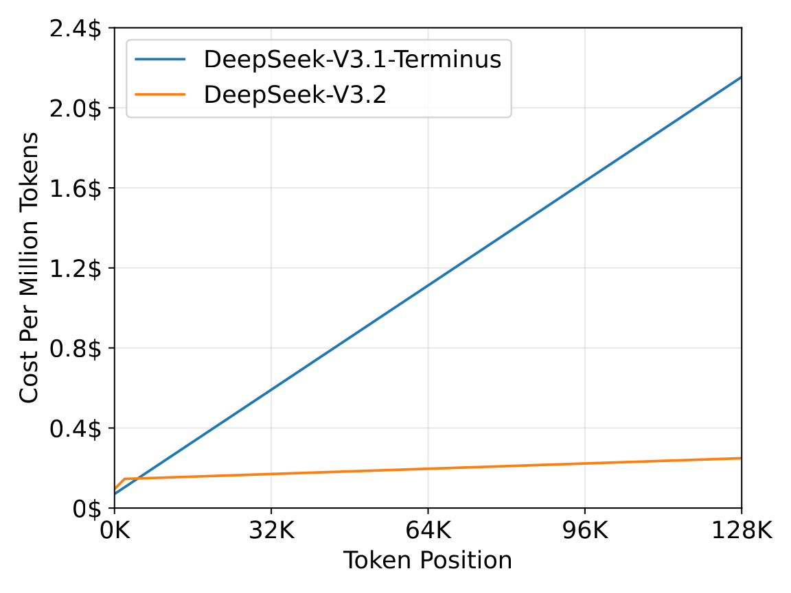
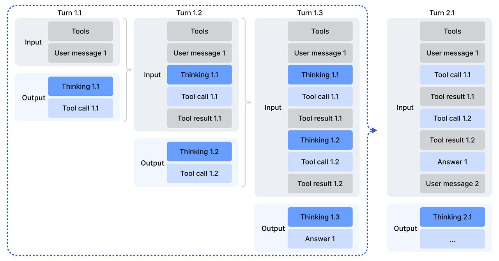
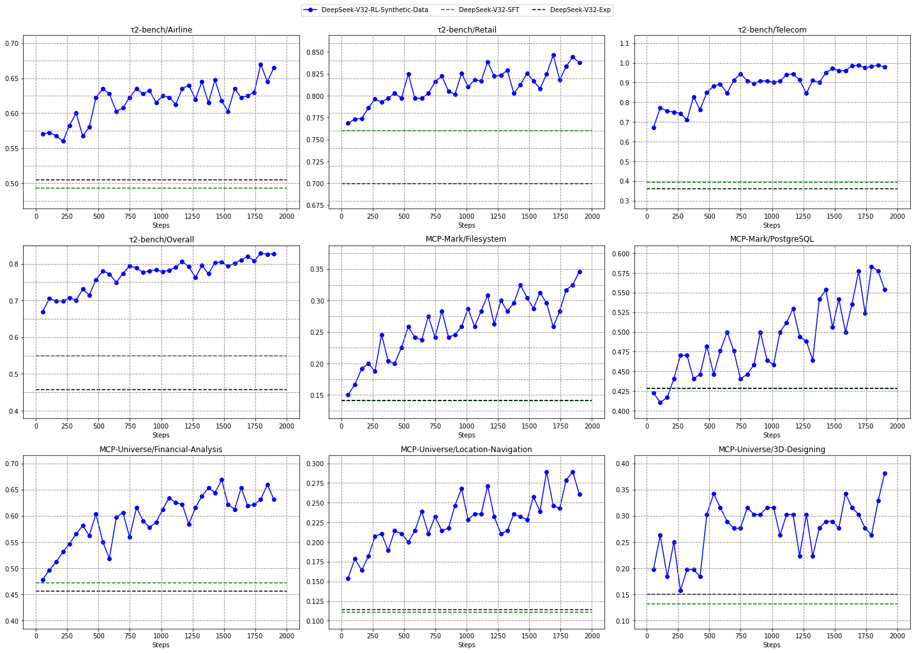
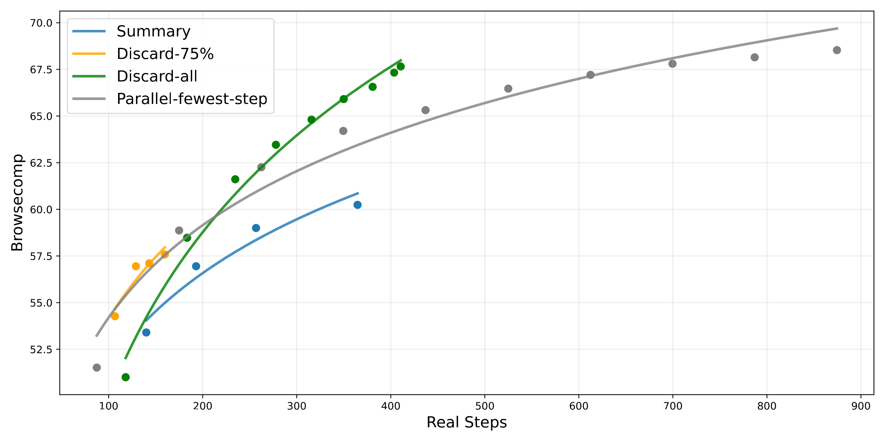

DeepSeek-V3.2: Pushing the Frontier of Open Large Language Models
摘要 / 核心贡献
论文将开源大模型在复杂任务上落后于闭源前沿模型的原因归结为三点缺陷，并对每一点给出针对性方案：
- 架构层面：Vanilla / MLA Attention 在长序列上是 $O(L^2)$，制约部署与后训练。→ DSA 让核心注意力变成 $O(Lk)$，长上下文 decoding 成本下降数倍。
- 资源层面：开源模型后训练 compute 投入不足。→ Scalable GRPO 通过 unbiased KL、off-policy mask、Keep Routing、Keep Sampling Mask 把 RL 训得稳，跑出 >10% pre-train cost 的后训练算力。
- Agent 层面：开源模型在工具调用 / 复杂指令下泛化差。→ Synth Pipeline 自动合成 1827 个 environment、4417 个任务、8.5 万 prompt，把推理与工具调用统一在一条轨迹里。

1 背景与核心问题
2024-2025 年开源 LLM（Qwen3、Kimi-K2、MiniMax M2、GLM-4.5）持续进步，但闭源 GPT-5 / Gemini-3 / Claude-4.5 进步更快，差距在 拉大而非收敛。论文判断核心瓶颈不在"再多堆点参数 / token"，而在三件事：
- 稠密 attention 的 $O(L^2)$ 让 128K 推理与 RL rollout 极其昂贵；
- 开源团队普遍 RL 算力远不及 pre-train（典型 1-3%），高难任务训不动；
- 非 SWE-Verified / 标准基准之外的"长尾" agent 任务（MCP-Universe、Tool Decathlon）开源模型表现远弱。
2 DeepSeek Sparse Attention (DSA)
2.1 原型：Lightning Indexer + Top-k Selector
DSA 的思路：在每个 query token 真正去做 attention 之前，先用一个非常便宜的 lightning indexer 给历史 token 打分，然后只在 top-k 个最相关的 KV 上做 attention。它由两件事组成。
(1) Lightning Indexer. 对 query $\mathbf h_t$ 与历史 token $\mathbf h_s$ 计算索引分数：
每个项的含义：$\mathbf q_{t,j}^I, w_{t,j}^I$ 由 $\mathbf h_t$ 经 indexer 投影得到的第 $j$ 个 head 的 query 向量与门控权重；$\mathbf k_s^I$ 是 $\mathbf h_s$ 投影得到的 indexer key。用 ReLU 而不是 softmax 是为了 throughput——可以走 FP8 高吞吐 kernel；同时 $H^I$ 设很小，使 indexer 整体耗时远小于 MLA。
(2) Top-k Token Selection. 对每个 query 取 top-k 索引最高的 KV 做注意力：
关键直觉：在 128K 上下文里真正 attention 高的 token 通常 极其稀疏，所以 $k\ll L$（论文用 $k=2048$）即可在性能不掉的前提下把 attention 复杂度从 $O(L^2)$ 砍到 $O(Lk)$。
2.2 在 MLA 上落地：MQA 模式
为了让 DSA 能从 V3.1-Terminus 的 MLA 检查点 continue training（不是从头训），并满足"每个 KV 必须被多个 query 共享"的 kernel 效率约束，作者把 DSA 实例化在 MLA 的 MQA 模式之上：每个 latent KV 被该 token 的全部 query head 共享。

2.3 两阶段 continued pre-training
从 128K context 的 V3.1-Terminus base 出发：
2.4 推理成本：H800 实测


3 后训练：把 RL Compute 推到预训练的 10%+
后训练保持 V3.2-Exp 的两段式：先 specialist distillation（在 6 个领域：数学、编程、通用逻辑、通用 agent、agentic coding、agentic search 各训一个 specialist，再蒸馏回 base），再 mixed GRPO。但要把 RL compute 拉到 pre-train 的 10%+ 而不崩，需要 4 个稳定性技巧。
3.1 Scaling GRPO 的四个稳定性技巧
原始 GRPO 目标：
$\hat A_{i,t}=R_i-\mathrm{mean}(\boldsymbol R)$ 是组内归一化优势。下面四条技巧都是为了把 long-horizon、long-rollout、MoE 路由变化等带来的不稳定性压住。
3.2 工具调用中的 Thinking：上下文管理
R1 的策略是"每出现新 message 就丢弃 reasoning"。在 tool-use 场景下这非常浪费——每次 tool 返回都要重推一遍整个推理链。V3.2 改成两条规则：
- 只有遇到 新的 user message 才丢弃历史 reasoning；如果只是 tool output，reasoning 全部保留。
- 即便丢弃了 reasoning trace，tool calls 与 tool results 的历史仍保留。
但 Roo Code / Terminus 这类把 tool 模拟成 user message 的框架不能从这条规则中受益（每轮都丢 reasoning），所以官方建议在它们之上跑 non-thinking 模式。

3.3 大规模 Agent 任务合成
RL data 由四类构成：
| 任务类别 | 任务数 | 环境 | Prompt 来源 |
|---|---|---|---|
| Code agent (SWE-style) | 24,667 | 真实（GitHub issue+PR 复现） | 抽取 |
| Search agent | 50,275 | 真实搜索 API | 合成 |
| General agent | 4,417 | 合成 | 合成 |
| Code interpreter | 5,908 | 真实 Jupyter | 抽取 |
四类任务的关键设计差异：
- Code agent. 从 GitHub mine 出 issue ↔ PR pair；用 LLM-judge 过滤；自动 setup environment，要求 F2P>0 且 P2F=0（gold patch 修了 issue 且没引入回归）才算成功。覆盖 Python/Java/JS/TS/C/C++/Go/PHP，几万个可重现环境。
- Search agent. 多 agent pipeline：从 web 抽取 long-tail entity → question-construction agent 生成 QA → 多个不同 checkpoint 的 answer agent 生成候选 → verification agent 用搜索做多 pass 校验，只保留"ground-truth 全对、其他候选全错"的样本。
- General agent. 自动环境合成 agent 造出 1827 个环境。每个环境流程：① bash + search 抓数据进沙盒 → ② 合成 task-specific tool 函数 → ③ 出 task + Python solution + Python verifier，solution 只能调 tool 函数（不能直接读 DB），且 solution 的输出必须通过 verifier；不通过就改 solution/verifier；可解后再迭代加难度。最后用 V3.2 跑 RL，只保留 pass@100>0 的实例。
- Code interpreter. 数学 / 逻辑 / 数据科学题，必须借助 Jupyter 执行才能解。
设计哲学：hard to solve, easy to verify
4 实验评估
4.1 主结果：跨能力对比闭源前沿
| 类别 | 基准 | Claude-4.5-Sonnet | GPT-5-High | Gemini-3.0-Pro | Kimi-K2-Thinking | MiniMax-M2 | V3.2-Thinking |
|---|---|---|---|---|---|---|---|
| English | MMLU-Pro | 88.2 | 87.5 | 90.1 | 84.6 | 82.0 | 85.0 |
| GPQA Diamond | 83.4 | 85.7 | 91.9 | 84.5 | 77.7 | 82.4 | |
| HLE (text-only) | 13.7 | 26.3 | 37.7 | 23.9 | 12.5 | 25.1 | |
| Code | LiveCodeBench | 64.0 | 84.5 | 90.7 | 82.6 | 83.0 | 83.3 |
| Codeforces (Rating) | 1480 | 2537 | 2708 | — | — | 2386 | |
| Math | AIME 2025 | 87.0 | 94.6 | 95.0 | 94.5 | 78.3 | 93.1 |
| HMMT Feb 2025 | 79.2 | 88.3 | 97.5 | 89.4 | — | 92.5 | |
| IMOAnswerBench | — | 76.0 | 83.3 | 78.6 | — | 78.3 | |
| Code Agent | Terminal Bench 2.0 | 42.8 | 35.2 | 54.2 | 35.7 | 30.0 | 46.4 |
| SWE Verified | 77.2 | 74.9 | 76.2 | 71.3 | 69.4 | 73.1 | |
| SWE Multilingual | 68.0 | 55.3 | — | 61.1 | 56.5 | 70.2 | |
| Search Agent | BrowseComp | 24.1 | 54.9 | — | 60.2* | 44.0 | 51.4 / 67.6* |
| BrowseCompZh | 42.4 | 63.0 | — | 62.3 | 48.5 | 65.0 | |
| HLE (search) | 32.0 | 35.2 | 45.8 | 44.9 | 31.8 | 40.8 | |
| Tool Use | $\tau^2$-Bench | 84.7 | 80.2 | 85.4 | 74.3 | 76.9 | 80.3 |
| MCP-Universe | 46.5 | 47.9 | 50.7 | 35.6 | 29.4 | 45.9 | |
| MCP-Mark | 33.3 | 50.9 | 43.1 | 20.4 | 24.4 | 38.0 | |
| Tool-Decathlon | 38.6 | 29.0 | 36.4 | 17.6 | 16.0 | 35.2 |
* 表示开启上下文管理（Discard-all）后的结果。
(超过 GPT-5-High 35.2)
(全场最高)
(超 Kimi-K2 60.2)
(开源全场最高)
三个观察：
- Reasoning 上 V3.2-Thinking ≈ GPT-5-High，输出 token 比 K2-Thinking 少很多（见 Table 3）。
- Code agent 上 V3.2 显著领先所有开源模型；Terminal Bench 2.0 数 46.4 来自 Claude Code 框架（Terminus 与 V3.2 的 thinking 上下文管理不兼容，那个设置下 39.3）。
- MCP-Mark 等 long-horizon tool 任务 V3.2 经常"自我反复验证"导致超 128K 上下文，加上 context management 才能进一步发挥；但即便如此已远高于其它开源模型。
4.2 Speciale: 把 token budget 放开后冲奥赛金牌
正式 V3.2 用 length-penalty 训练以控制部署成本；研究目的的 Speciale 把 length penalty 放宽 + 仅在 reasoning data 上训 + 加 DeepSeekMath-V2 数据/奖励，主推"更多 thinking token 能换多少能力"。
| 基准 (token 数) | GPT-5-High | Gemini-3.0-Pro | K2-Thinking | V3.2-Thinking | V3.2-Speciale |
|---|---|---|---|---|---|
| AIME 2025 | 94.6 (13k) | 95.0 (15k) | 94.5 (24k) | 93.1 (16k) | 96.0 (23k) |
| HMMT Feb 2025 | 88.3 (16k) | 97.5 (16k) | 89.4 (31k) | 92.5 (19k) | 99.2 (27k) |
| HMMT Nov 2025 | 89.2 (20k) | 93.3 (15k) | 89.2 (29k) | 90.2 (18k) | 94.4 (25k) |
| IMOAnswerBench | 76.0 (31k) | 83.3 (18k) | 78.6 (37k) | 78.3 (27k) | 84.5 (45k) |
| LiveCodeBench | 84.5 (13k) | 90.7 (13k) | 82.6 (29k) | 83.3 (16k) | 88.7 (27k) |
| Codeforces | 2537 (29k) | 2708 (22k) | — | 2386 (42k) | 2701 (77k) |
| HLE | 26.3 (15k) | 37.7 (15k) | 23.9 (24k) | 25.1 (21k) | 30.6 (35k) |
顶级竞赛成绩（论文 Table 4，Speciale 取得）：
| 赛事 | 分数 | 名次 | 奖牌 |
|---|---|---|---|
| IMO 2025 | 35/42 | — | Gold |
| CMO 2025（英文版） | 102/126 | — | Gold |
| IOI 2025 | 492/600 | 10th | Gold |
| ICPC WF 2025 | 10/12 题 | 2nd | Gold |
4.3 合成 Agent 任务的消融
两个问题：合成任务够不够难？能不能 transfer？
难度：抽样 50 个 general 合成任务，让自家 V3.2-Exp 与前沿闭源模型测试：
| Pass@K | V3.2-Exp | Sonnet-4.5 | Gemini-3.0-Pro | GPT-5-Thinking |
|---|---|---|---|---|
| 1 | 12% | 34% | 51% | 62% |
| 2 | 18% | 47% | 65% | 75% |
| 4 | 26% | 62% | 74% | 82% |
最强闭源在 pass@1 也只有 62%，证明合成任务对前沿模型也是 challenging，不是 toy。

4.4 Search Agent 的上下文管理
BrowseComp 类任务即便 128K 也常在推理途中爆窗。论文比较四种 test-time compute 扩展策略（占比超过 80% 时触发）：
- Summary：把溢出轨迹总结后重新 rollout。
- Discard-75%：丢前 75% 的 tool call 历史。
- Discard-all：完全清空 tool 历史（类似 Anthropic 的 new-context tool）。
- Parallel-fewest-step（baseline）：并行采 N 条独立 trajectory，选 step 数最少的。

5 深度分析：这篇论文真正的"信号"
- 架构 × 训练 × 数据三件事都做到位才是开源能追的关键。 单做 sparse attention 不够（很多模型的 sparse attention 拿不到长上下文性能持平），单做更大 RL 也不够（容易塌方）。V3.2 把三件事打成一个 pipeline：DSA 让 RL rollout 便宜→ Scalable GRPO 让 RL compute 真能放大→ Synth pipeline 让 RL 能持续吃到难且可验证的数据。
- "长对话里保留 thinking"是 thinking-in-tooluse 的工程关键。R1 风格的"每条新 message 就丢 reasoning"在 agent 场景下损耗巨大，V3.2 改写规则后才使 thinking-mode 在 tool-use 上具备性价比。
- Hard to solve, easy to verify 是 RL 数据合成的核心节奏。General agent 通过"任务+solution+verifier 一起合成、solution 只能调 tool"把 verifier 锁死，从根本上避免了 reward hacking。
- Test-time compute 扩展不只一种：序列化 (context mgmt) 与并行化 (parallel sampling) 各有 efficiency-scalability 权衡。Discard-all 说明"激进遗忘 + 重启探索"在 BrowseComp 上比 Summary 更有效。
- Length penalty 的 trade-off 第一次被透明披露：V3.2 因为 length penalty 比 Speciale 弱很多分，token efficiency 仍是首要未解。
6 局限性与展望（论文自陈）
- 世界知识广度仍弱于 Gemini-3.0-Pro，主因 pre-train 总 FLOPs 不足，未来计划继续扩 pre-train。
- Token efficiency 弱于前沿闭源——同样质量需要更长链路，未来重点是"intelligence density"。
- Hardest tasks（HLE、ICPC WF 极难题、MCP 长尾）仍落后，需要继续优化 base model 与后训练 recipe。
- 当前 thinking 模式与 Roo Code/Terminus 不兼容，部署时需选 non-thinking 或换框架。
- RL on long context 仍需 context-management 才能发挥（128K 在 search/MCP 不够用）。
7 核心总结
- DSA = lightning indexer + top-k token select，把核心 attention 从 $O(L^2)$ 砍到 $O(Lk=2048)$，从 V3.1-Terminus 通过 2.1B + 943.7B token 的 continued pre-train 平滑迁移。
- RL compute > 10% pre-train cost，靠 Unbiased KL / Off-Policy Mask / Keep Routing / Keep Sampling Mask 四件事压住 GRPO 不稳定。
- Thinking 在 tool-use 中保留仅在 user message 切换时丢弃 reasoning，使 thinking-mode 在 agent 场景具备实际收益。
- 1827 个合成环境 + verifier 把 RL 数据规模化：hard-to-solve, easy-to-verify，且能 transfer 到 $\tau^2$ / MCP 真实环境。
- Speciale 拿 IMO/IOI/CMO/ICPC WF 2025 金牌，但 token 效率代价大；正式 V3.2 用 length-penalty 换取部署经济性。
8 资源链接
- arXiv: 2512.02556 · PDF: arxiv.org/pdf/2512.02556
- HuggingFace 推理实现: deepseek-ai/DeepSeek-V3.2-Exp
- DeepSeekMath-V2 (Speciale 数学方法): github.com/deepseek-ai/DeepSeek-Math-V2
- BrowseComp 评测: Wei et al., 2504.12516 · MCP-Universe: Luo et al., 2508.14704 · Tool Decathlon: Li et al., 2510.25726
- 相关前作：DeepSeek-V3 (2412.19437)、DeepSeek-V2 / MLA (2405.04434)、Native Sparse Attention (Yuan et al., ACL 2025)